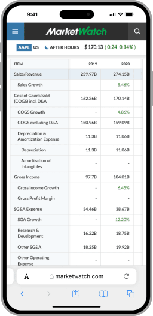
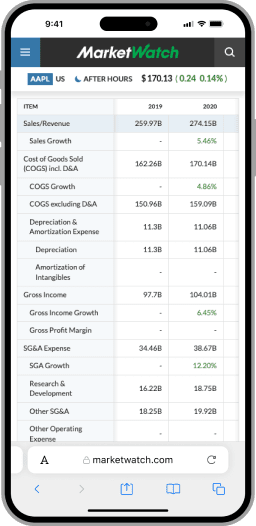
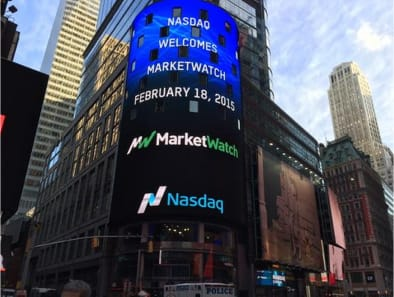
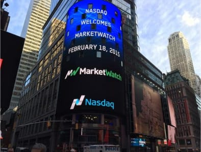

MarketWatch
Nearly a Decade of Design & Development
To the surprise of many, the engineering crew that keeps the lights on over at MarketWatch wouldn't fill even one side of AFC Richmond's pitch and for 8 1/2 years I was lucky enough to be part of that team.
As the design and front-end development lead, we set to rebuild the whole site from the ground up. Legacy technology stacks were successfully sunset in the process while each corner of the overall aesthetic and experience was given a well deserved modern facelift.
Role Responsibilities
UX/UI Design, Front-End Development, Systems Architect, Project Management, QA Testing, Team Scapegoat
Moodboard
Executive leadership concluded that audiences wouldn't be as receptive to some of the more brazen ideas that stemmed from our original homepage moodboard. This resulted in the more traditional variation seen today and while the project is still considered an overall success; it's fun to look back at some of the initial ideas and remember what could have been.
- #3677A8
- #38444F
- #404F59
- #CDD9DE
- #3C3D3E
- #2A2B2C
- #00AC4E
Making Financial Data Sexy
I'm not going to pretend there isn't a bias when I say that the MarketWatch quote page is best offering of stock data in the public space. It remains one of the crowning achievements of my time working with the crew at Dow Jones.
Quite possibly the most impressive feat is that the whole experience scales down to mobile device sizes without any loss of data or JavaScript intervention; massive tables and all.
 

Along with the new quote page came the need for a new visual language on how we presented chart based data within our editorial content.

MarketWatch Article Page
Articles found themselves the subject of frequent redesigns during my tenure.
Maecenas sed diam eget risus varius blandit sit amet non magna. Vivamus sagittis lacus vel augue laoreet rutrum faucibus dolor auctor. Etiam porta sem malesuada magna mollis euismod. Cras justo odio, dapibus ac facilisis in, egestas eget quam.

News Corp Media Integrations
With MarketWatch setting records from a monthly traffic standpoint, sister outlets like Barron's began to express interest in integrating into the article feed to help drive subscriptions into their product lines.

Fake Money, Real Bragging Rights
Have you ever wondered what the financial equivalent of Fantasy Football is? Well look no further than the Virtual Stock Exchange. A portion of MarketWatch completely unique from the competition, we were able to utilize existing experiences and data endpoints to allow people to simulate what it would be like to win or lose big; without the risk or necessary deep pockets that come standard with the real thing.
A big hit among high school and college economic classes across the board. Best yet, it's free to play so go make an account and get trading.

MarketWatch, Meet Times Square
At one point I had the pleasure to rebrand MarketWatch which lead to a rather unique moment where for a day my work was displayed on the Nasdaq screen that looms over Times Square. The pretzel cart attendants and Buzz Lightyear cosplayers didn't seem overly impressed but I still thought it was kind of neat.
 
